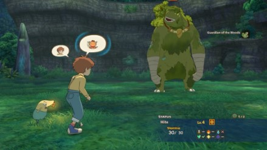
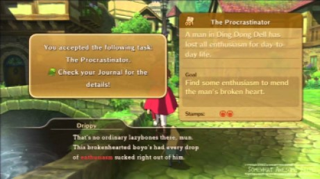
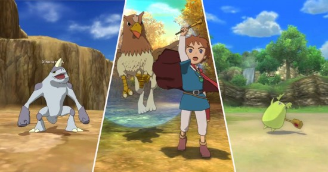

The game is primarily a role-playing style. The game typically features a third-person camera. The player controls the player character in a combination of combat and puzzle game elements to achieve goals and complete the story.The game also features a battle mode. During battles, players command a single human ally. To fight enemies, players use magical abilities or familiars. The battle mode in Wrath of the White Witch is on an open battlefield, allowing players to freely roam around the area.
Like other role-playing games, the game has players complete quests, which are linear scenarios with set objectives, to progress through the story. Outside of quests, players can freely roam the open world, finding towns, dungeons, and other dangerous places scattered throughout. One of the core aspects of the game is the ability to travel between worlds; the majority of the game takes place in a magical world, often referred to as the "other world", while part of the games take place in Oliver's hometown. Upon leaving a location, players enter the World Map, which can be navigated, or used to select a destination. The world may be fully explored from the beginning of the game without restrictions, although story progress unlocks more gameplay content and forms of transport to navigate the world. In the main games, players initially run to navigate the world, though later gain the ability to travel by boat; Wrath of the White Witch adds the ability to ride on the back of a dragon.
Familiars, known as imajinn (イマジン) in the Japanese version of the games, are creatures that wander throughout the game world. They can be found in different shapes and forms, and can be obtained after being defeated in battle. They can then be tamed, in order to be suitable to send out in battle to fight for players. Players command familiars, who generally have a range of magic and physical attacks. Familiars level up and evolve alongside the human characters; each has unique statistics and capabilities, and can be guided through their upgrades with treats and equipped with items.
All image and game content is owned by their respective creators.